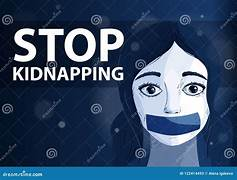

Kidnapping and rape are among the most heinous crimes faced by Indigenous women globally. Often isolated from broader societal support, they become vulnerable to exploitation, especially in regions where law enforcement fails to protect marginalized groups. Victims are frequently targeted during everyday activities, taken away from their families and communities under the guise of trust or force. The trauma caused by such acts not only affects the survivors but also devastates their communities, perpetuating a cycle of fear and silence.
Efforts to combat these crimes are hindered by systemic issues, including poor infrastructure, lack of legal advocacy, and cultural stigmas. Advocacy groups continue to push for better policies, safe spaces, and education to ensure Indigenous women and children are protected. Raising awareness about these tragedies is a crucial step in addressing the injustices and holding perpetrators accountable.
